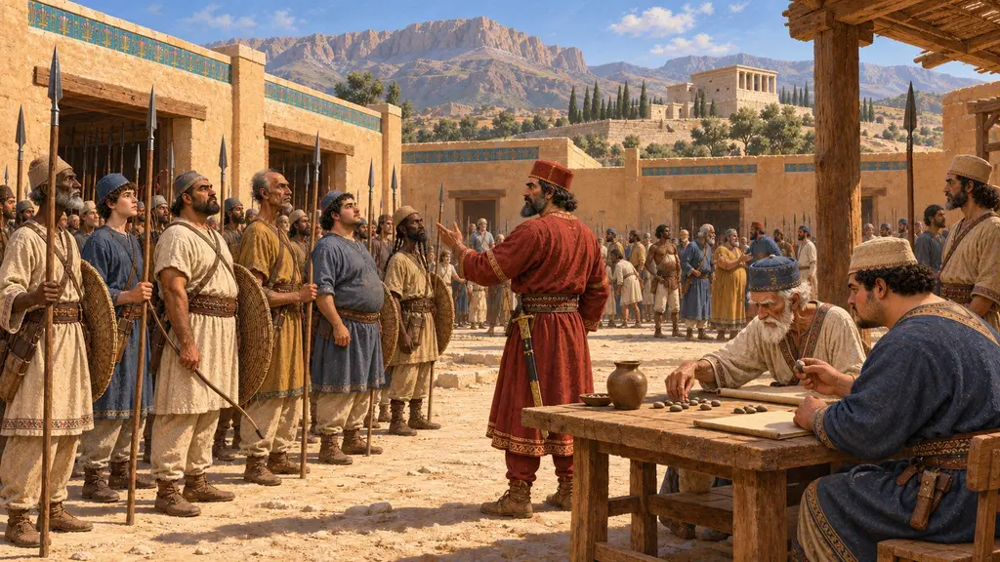
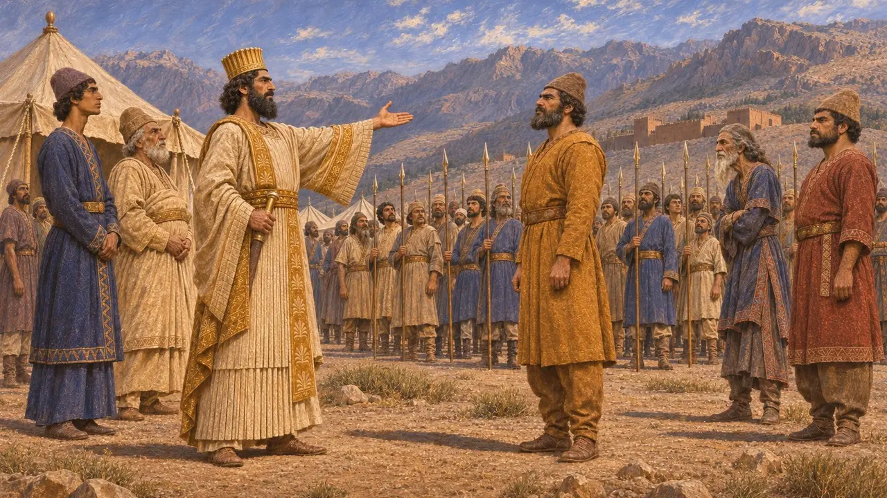
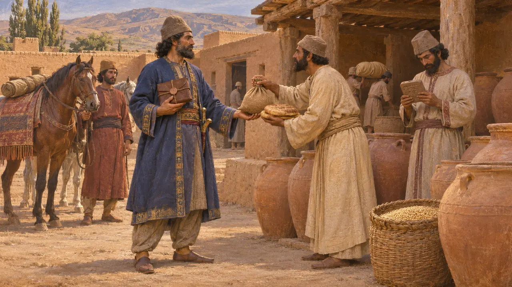
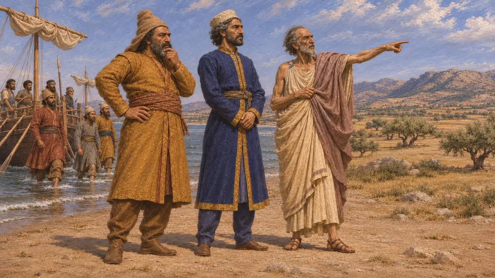
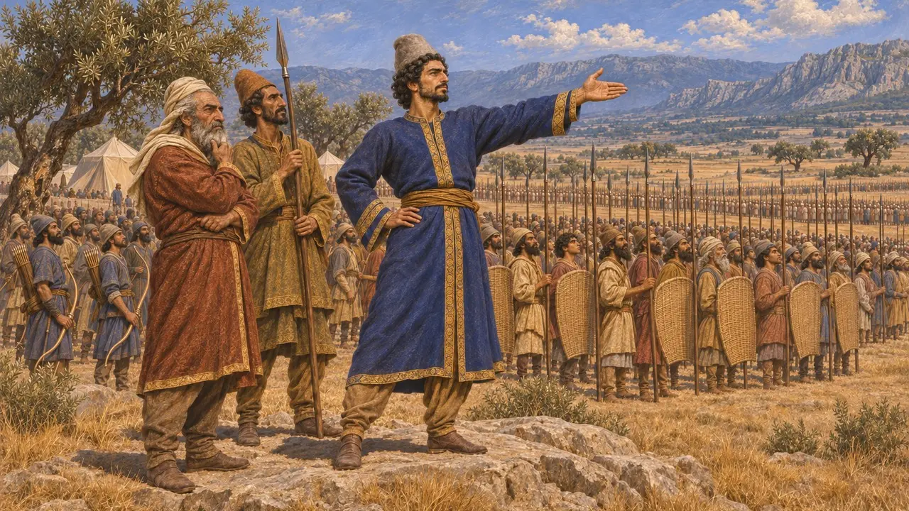
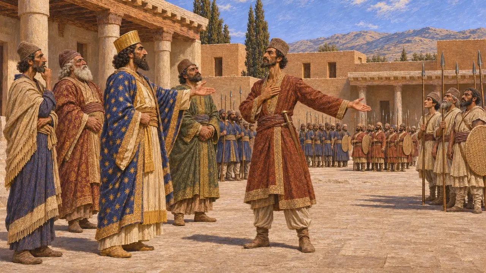

قادة الملك
قادة عيّنهم الملك الفارسي لقيادة حملاته، نحو 521-479 ق.م
يبدو أن الملوك الفرس لم يحتفظوا بهيئة ثابتة من القادة العسكريين، بل كانوا يعيّنون لكل حرب قادتها، وهم في الغالب نبلاء فرس أو ميديون تربطهم بالملك قرابة أو مصاهرة أو خدمة طويلة. وقد حفظ نقش بهستون وهيرودوت أسماءهم، من الرجال الذين سحقوا تمرّدات عام 521 ق.م إلى داتيس وأرتافرنيس وماردونيوس، الذين قادوا جيوش الملك ضد اليونانيين.
في اللعبة: تسمّي اللعبة داتيس وأرتافرنيس وماردونيوس وقادة داريوس في عام 521 ق.م قادةً للملك، وهذا يتّفق مع نقش بهستون وهيرودوت. غير أنها تعاملهم بوصفهم منصبًا واحدًا، مع أن الملوك الفرس كانوا يعيّنون القادة حملةً بعد حملة.

قادة داريوس عام 521
في السجلاتيكرّر داريوس في بهستون أنه أرسل جيشًا بقيادة رجل يسمّيه «بندكا»، أي التابع المخلص، وجعله قائدًا عليه. فقد زحف هيدارنيس (فيدارنا) على الميديين، وإنتافرنيس (فيندافرنا) على أراخا في بابل، وأرتافارديا على فهيازداتا. وهزم فيفانا، ساتراب أراخوسيا، الجيش الذي أرسله فهيازداتا ضده. وقاتل دادارشي وفاوميسا في أرمينيا، وقاد غوبرياس الحملة على العيلامي أثاميتا.
DB §§25-50; DB §71

داتيس في الأرشيف الفارسي
في السجلاتيسجّل لوح من ألواح تحصينات برسبوليس يعود إلى نحو عام 494 ق.م حصصًا تموينية لرجل يُدعى داتيا، كان يحمل وثيقة مختومة من الملك في رحلة من سارديس نحو البلاط. ورأى د. م. لويس أنه على الأرجح داتيس الميدي، مما يدل على نشاطه في الغرب في مهمة ملكية قبل ماراثون بأربع سنوات.
D. M. Lewis, 'Datis the Mede', Journal of Hellenic Studies 100, 1980

داتيس وأرتافرنيس عام 490
رواية قديمةيقول هيرودوت إن داريوس عزل ماردونيوس عن القيادة وأسند حملة عام 490 ق.م إلى داتيس، وهو ميدي، وإلى أرتافرنيس، ابن ساتراب سارديس وابن أخي الملك. فاستوليا على ناكسوس وإريتريا، ثم نزلا في ماراثون بإرشاد هيبياس المنفي. ويذكر هيرودوت أن قتلى الفرس في الهزيمة التي تلت بلغوا 6,400 رجل.
Herodotus 6.94-6.117

ماردونيوس، صهر الملك
رواية قديمةيصف هيرودوت ماردونيوس بن غوبرياس بأنه شاب حديث الزواج من أرتوزوسترا ابنة داريوس حين قاد جيشًا إلى تراقيا ومقدونيا عام 492، فتحطّم أسطوله قبالة آثوس. وفي عهد خشايارشا كان أحد القادة الستة على الجيش البري. وبعد سلاميس بقي في بلاد اليونان مع قوات مختارة، وقُتل في بلاتيا عام 479.
Herodotus 6.43-45; 7.82; 8.100-101; 9.63-64

رتبة أم تكليف
متنازع عليهلا يذكر أي نص فارسي رتبة دائمة للقائد العسكري؛ ويبدو أن القيادة كانت تُسند إلى أقرباء الملك والساترابات والنبلاء الموثوقين حملةً بعد حملة. ويصف هيرودوت ضباطًا على عشرة آلاف وعلى ألف وعلى مئة وعلى عشرة. ويُعرف لقب فارسي لقائد الألف، هو هزاربتيش، بطريقة غير مباشرة من صيغه اليونانية والآرامية. ويختلف المؤرخون في مدى تعبير نظامه المرتّب هذا عن الممارسة الفارسية.
Herodotus 7.81; P. Briant, From Cyrus to Alexander, 2002
المصادر
- Darius I, Behistun inscription (DB)
- Herodotus, Histories, books 6-9
- P. Briant, From Cyrus to Alexander, 2002
- D. M. Lewis, 'Datis the Mede', Journal of Hellenic Studies 100, 1980
- A. Kuhrt, The Persian Empire: A Corpus of Sources from the Achaemenid Period, 2007